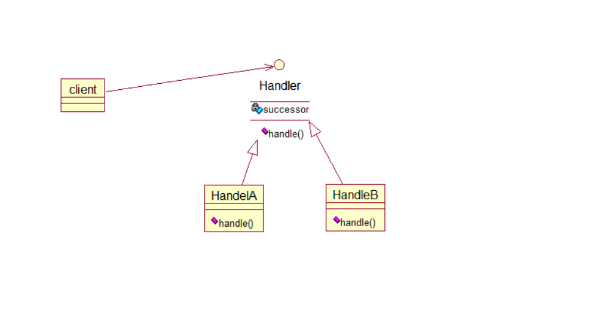

Chain of Responsibility 思想：使多个对象都有机会处理请求，从而避免请求的发送者和接收者之间的耦合关系。将这些对象连成一条链，并沿着这条链传递该请求，直到有一 个对象处理它为止。 场景：该模式实际上是对人们常会不自觉地去做的一种代码组织方式的总结而已。有的时候一条消息需要被处理，我们当然可以在一个雷的一个方法中 对他进行所有需要的处理。但是，如果要做的处理很复杂的情形，甚至能够按照一定的逻辑醒来分类所有这些处理，则不要在一个雷一个函数里处以一切会更好，我 们可以定义多个处理类类表示逻辑上的不同的处理，然后一个个处理类的传递这个消息对象，让希望处理该消息的类自己决定是不是要处理。这样，就能将一个难以 维护的复杂处理过程，分解为一系列简单明了，易于维护的类了。
实现：上图是实现方式之一。即，使所有可能处理该请求的对象继承自一个基类，实际上，只要逻辑语义上我们保持这样一种让每个处理类自己决定何 时处理，并传递请求的思想，实现方式也可以千变万化，无论是用接口代替，或者甚至只是简单的定义相同结构的处理函数而通过反射机制来调用处理函数和传递处 理请求，都是可选的方案。 重构成本：中。 Chain of Responsibility(CoR)责任链设计模式是用一系列请求处理器试图处理一个请求，这些请求处理器之间是一个松散耦合，唯一的共同点是在他们之间传递请求。例如客户端发送一个请求，请求处理器A先处理，如果A没有处理或者无法处理，就将请求传递给请求处理器B，如果B没有处理或者无法处理，就将请求传递到请求处理器C去处理，所有这些请求处理器构成一条请求处理责任链。Chain of Responsibility责任链设计模式的结构如下： 
//抽象请求处理器 abstract class Handler{ private Handler successor; public Handler(Handler successor){ this.successor = successor; } public Handler getSuccessor(){ return successor; } public void handRequest(Request request); } //Request请求类 class Request{ private String type; public Request(String type){ this.type = type; } public String getType(){ return type; } } //数字请求处理器 class NumberHandler extends Handler{ public NumberHandler(){ } public NumberHandler(Handler successor){ super(successor); } public void handRequest(Request request){ if(request.getType().equals(“Number”)){ System.out.println(“Number has been handled”); } //传递到下一个请求处理器处理 else{ getSuccessor().handRequest(request); } } } //字母请求处理器 class CharacterHandler extends Handler{ public CharacterHandler(){ } public CharacterHandler(Handler successor){ super(successor); } public void handRequest(Request request){ if(request.getType().equals(“Character”)){ System.out.println(“Character has been handled”); } //传递到下一个请求处理器处理 else{ getSuccessor().handRequest(request); } } } //特殊符号请求处理器 class SymbolHandler extends Handler{ public SymbolHandler(){ } public SymbolHandler(Handler successor){ super(successor); } public void handRequest(Request request){ if(request.getType().equals(“Symbol”)){ System.out.println(“Symbol has been handled”); } //传递到下一个请求处理器处理 else{ getSuccessor().handRequest(request); } } } public class Application{ public static void main(String[] args){ Handler numberHandler = new NumberHandler(); Handler characterHandler = new CharacterHandler(); Handler symbolHandler = new SymbolHandler();
numberHandler.setSuccessor(characterHandler); characterHandler.setSuccessor(symbolHandler); Request request1 = new Request(“Number”); Request request2 = new Request(“Character”); Request request3 = new Request(“Symbol”);
Java中Chain of Responsibility的两个应用例子： (1).Java的异常处理机制，当程序中发生异常时，try-catch会比较所捕捉的异常是否符合异常类型，如果符合就执行所设定的处理，如果都没有比对到适当的异常，就会将异常丢出try-catch区块之外。 (2).Struts1.x中的filter过滤器链，Struts2.x中拦截器链等等，将HTTP请求处理中的字符编码转换，加密/解密等常用功能分别作为一个个的请求处理器，接收到客户端请求时对其进行处理，同时在向客户端返回服务端响应时也使用这些处理器进行处理。